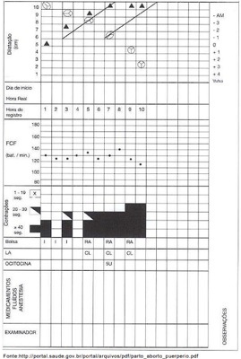
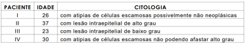
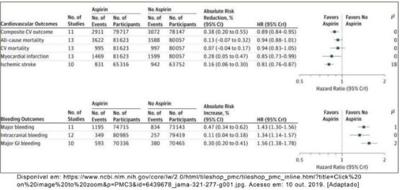

A doenc partir da propagac endométrio, as tubas, o perito diagnóstico. Na anamnese de uma paciente com suspeita de DIP, o ginecologista deve levar em consideração
T.C.A.F., 54 anos, procura atendimento médico no ambulatório de ginecologia por apresentar, há três meses, sangramento vaginal esporádico em pequena quantidade. A paciente faz uso de terapia hormonal (TH) combinada com estrogênio e progesterona, transdérmica, há 3 anos. Apresenta ultrassonogra a transvaginal (USG) recente, que mostra endométrio homogêneo com 12 mm de espessura e miométrio sem anormalidades. Diante desse caso, a conduta a ser tomada pelo ginecologista será
Dentre as infecc vaginal siológico, composto primordialmente por outros microrganismos que podem estar associados a processo inflamatório (vaginites) ou não estarem relacionados à in amação (vaginoses). Em relação ao diagnóstico da vaginose bacteriana (VB), analise os critérios a seguir. I. corrimento vaginal homogêneo branco-acinzentado II. presenc III. teste das aminas ( IV. medida do pH vaginal maior do que 4,5 V. presença de eritema e petéquias vaginais Dos critérios apresentados, os de Amsel, utilizados no diagnóstico da vaginose bacteriana, estão presentes nos itens
A anticoncepc que, atualmente, conseguem planejar quando querem engravidar. O advento do anticoncepcional hormonal combinado (AHC), que marca o início dessa nova fase da anticoncepc estroge I. O anel vaginal disponível no Brasil libera 120 anticoncepcional em adesivo libera 20 μg/dia de EE e 150 μg/dia de norelgestromina. II. Os AHC agem, primariamente, inibindo a secrec efeitos contraceptivos observados, pois inibe o pico pré-ovulatório do hormo III. Os efeitos adversos mais frequentemente relacionados ao estroge uterino irregular, na IV. Os contraceptivos orais combinados (COC) apresentam grande variabi lidade de formulac componente estroge Das afirmativas, estão corretas
O sangramento uterino anormal (SUA) é um distu esta ́ alterado, como a quantidade, a durac repercusso combinac
Uma adolescente, 19 anos, sem atividade sexual, com ausência de menstruação, é informada pelo seu médico que há forte probabilidade de suas gônadas se tornarem malignas. Ela apresenta desenvolvimento mamário no estágio II de Tanner. Para essa paciente , o diagnóstico mais provável e a melhor explicação para o desenvolvimento mamário são, respectivamente,
Primigesta, com 20 anos e 40 semanas de idade gestacional, apresenta evolução do trabalho de parto segundo partograma abaixo. Ao exame obstétrico de admissão, foi constatado o seguinte: altura uterina de 33 cm, bacia em ângulo subpubico > 90°, promontório inatingível e espinhas ciáticas planas. Diante da análise da última avaliação desse caso, o obstetra conclui que a paciente encontra-se em

A regulac produc ovariana, analise as afirmativas a seguir. I. Concentrac liberac folicular precoce. II. O estradiol elevado, atuando em conjunto com inibina A, aumenta as concentrac amplitude dos pulsos de LH. O LH ativa a síntese de androge de progesterona na camada granulosa. III. A ̀ medida que o folículo dominante é selecionado, a quantidade de receptores de LH nesse folículo, a secrec de fatores de crescimento intrauterinos e o fator de crescimento semelhante a insulina (IGF-1) aumentam. Nessa circunstância, o folículo dominante cresce cerca de 2mm por dia, até alcanc IV. Na fase pré-menstrual, em decorre o recrutamento dos folículos primordiais, cada um contendo um oócito parado na primeira divisa desenvolvera próximo ciclo. Das afirmativas estão corretas
Segundo o Ministério da Saúde, “A viole conseque permear as mais diversas culturas, independente de classe social, rac caracteri Fonte:bvsms.saude.gov.br/bvs/publicações/prevenção_agravo_violencia_sexual_mulheres_3ed.pdf Durante o atendimento médico de urgência a pacientes vítimas de violência sexual, a conduta correta a ser tomada é
A amenorreia é a ausência de menstruação e pode ser causada por diferentes condições. Para a adequada avaliação etiológica eterapêutica, devem ser realizados a história clínica e o exame físico detalhados, além de exames laboratoriais e de imagem indicados de forma criteriosa. Quanto às amenorreias primárias, analise as afirmativas a seguir. I. Entre as causas hereditárias de amenorreia primária, a mais comum é a decorrente do hipogonadismo hipogonadotró co idiopático, que, quando associado à alteração olfatória com anosmia ou hiposmia, caracteriza a Síndrome de Kallman. II. Numa paciente com amenorreia primária, apresentando níveis do hormônio folículo estimulante (FSH) normais, os fatores causais da amenorreia serão os distúrbios da ovulação e a insuficiência ovariana. III. A solicitação de cariótipo é particularmente indicada nas pacientes que apresentam amenorreias primárias hipergonadotróficas. IV. As características das amenorreias primárias, resultantes da agenesia mülleriana, estão ligadas aos níveis elevados de FSH e de testosterona. Das afirmativas, estão corretas
Revisar: possível letra faltando em enunciado
Ao examinar uma gestante, o médico diagnostica uma apresentação cefálica de etida de segundo grau ou de fronte. Nessa situação, o obstetra deve
Na passagem fetal através do canal de parto, em resposta à contratilidade uterina, o feto é empurrado também pelos músculos da parede abdominal, sendo compelido a executar movimentos consecutivos. O conjunto desses movimentos chama-se Mecanismo do Parto. Nesse processo, a passagem da maior circunferência da apresentação fetal através do anel do estreito superior da bacia materna configura
Paciente de 28 anos, com 13 semanas de gravidez, gesta III, para II, aborto 0, procura atendimento médico queixando-se de dor no baixo ventre. Durante a consulta, mostra ultrassonogra a transvaginal realizada há 4 semanas que evidencia colo uterino com 3,0 cm de comprimento. O obstetra, então, pensando em afastar uma evolução indesejada, resolve
Gestante de 32 anos, gesta IV, para II, aborto I, comparece ao pré-natal na unidade de referência com ultrassonogra a mostrando 14 semanas de gravidez e apresenta glicemia de jejum de 103 mg/dL. Refere que, no último parto, seu filho pesou 4200 g ao nascer. Considerando o resultado da glicemia e a idade gestacional, o próximo passo da conduta é
A prematuridade é uma intercorrência muito temida por obstetras e pediatras por provocar grande morbidade e mortalidade neonatal. O trabalho de parto prematuro pode ter várias causas. Entre estas, as mais frequentes são
Um oncologista, após atender a uma senhora de 60 anos de idade, na terceira recidiva de câncer de mama, com múltiplas metástases e derrame pleural bilateral de repetição, concluiu que a paciente não tinha possibilidades terapêuticas de cura. Em razão disso, orientou a própria paciente e os familiares sobre os cuidados paliativos. Depois desse atendimento, a senhora procurou seu médico ginecologista e manifestou a intenção de se submeter a tratamento quimioterápico experimental, com droga ainda em fase inicial de experimentação clínica e com grande potencial de efeitos colaterais, da qual tomou conhecimento pela rede mundial de computadores. A paciente a rmou que “deseja tentar tudo para continuar viva”. Nessa situação, de acordo com o Código de Ética Médica e a bioética em ginecologia, o ginecologista deve esclarecer detalhadamente os riscos e os benefícios da escolha da paciente e, caso ela persista em sua decisão de buscar por esse novo tratamento, ele deve
Primigesta, com 35 semanas e 3 dias de gestação estimada por data da última menstruação e ultrassonogra a de primeiro trimestre, chega à emergência referindo cefaleia occipital, escotomas e epigastralgia intensa com náuseas e vômitos. Nega contrações e perdas vaginais. Familiar relata que o pré-natal foi sem anormalidades, com a realização de 5 consultas na UBS e que a paciente nunca teve pressão alta. Ao exame, apresenta pressão arterial de 170/110 mmHg, altura uterina de 31 cm, tônus uterino normal, ausência de contrações, batimentos cardiofetais de 148 bpm, edema pronunciado de face e de membros inferiores. Em relação a essa paciente, analise as afirmativas a seguir. I. Há indicação de terapia preventiva anticonvulsivante com sulfato de magnésio e conduta antihipertensiva com hidralazina endovenosa ou nifedipina via oral. II. Há indicação de administração de betametasona IM por 48h e de tratamento da crise hipertensiva com metildopa por via oral. III. Por se tratar de pré-eclâmpsia grave, está indicada a interrupção da gestação. IV. A paciente tem baixo risco de recorrência de pré-eclâmpsia em gestação futura. Das afirmativas, estão corretas
Considere, na tabela a seguir, a idade de quatro pacientes e os seus respectivos resultadosda citologia de colo uterino, coletada pelo médico da unidade básica de saúde (UBS). Segundo as diretrizes brasileiras para rastreamento do câncer de colo uterino (INCA 2016), o médico da UBS encaminhará para colposcopia imediata as pacientes

Usuária de crack é encontrada desmaiada em via pública, sendo socorrida pelo SAMU que foi acionado por populares. Os socorristas do SAMU constatam útero gravídico com altura uterina de 30 cm, pressão arterial de 150/100 mmHg e frequência cardíaca fetal de 115 batimentos por minuto. Na maternidade, o obstetra constata sangramento escuro e volumoso, útero contraído e hipertônico e batimentos cardiofetais em 105 batimentos por minuto. A principal hipótese diagnóstica para esse caso é
Paciente, 34 anos, gesta III, para III, casada, professora, veio à Unidade Básica de Saúde (UBS) com atraso menstrual de 6 semanas. Ao exame físico, apresentou colo uterino amolecido, porém fechado. Foi realizado teste de gravidez com resultado positivo e imediatamente iniciado o pré-natal. Uma semana depois, a paciente voltou à UBS para mostrar o resultado de uma ultrassonogra a (USG) transvaginal, feita nesse mesmo dia do retorno. O resultado do exame constatou útero gravídico com saco gestacional regular, posicionado no corpo uterino, com presença de embrião sem sinais de vitalidade e idade gestacional estimada em 6 semanas. O resultado foi confirmado com nova USG após 7 dias, realizada na maternidade por orientação do médico da UBS. No momento da consulta na maternidade, a gestante não apresentava quaisquer sinais ou sintomas, e seu colo estava impérvio sem sangramento. Considerando o resultado das duas ultrassonografias, a classificação do abortamento e a conduta médica a ser tomada são, respectivamente,
Analisando a imagem do estudo publicado no JAMA em 2019 (Association of Aspirin Use for Primary Prevention With Cardiovascular Events and Bleeding Events: A Systematic Review and Meta-analysis), pode-se concluir que o uso da aspirina para prevenção primária, em relação ao risco (HR) de aumento da taxa de sangramentos maiores e da redução dos desfechos compostos cardiovasculares, são, respectivamente,

A Rede de Atenção Psicossocial (RAPS) do SUS é formada por diversos pontos de atenção, de forma a ofertar um cuidado integral e continuado as pessoas com sofrimento ou transtorno mental e com necessidades decorrentes do uso de crack, álcool e outras drogas. O equipamento da RAPS mais adequado à reinserção social dos pacientes e fundamental enquanto estratégia de desinstitucionalização é
O diagnóstico de uma doença que nunca provocará sintomas ou morte em pacientes constitui um problema de saúde pública, já que converte as pessoas em pacientes, sem necessidade, e leva a que sejam feitos tratamentos sem qualquer benefício em termos de saúde. Esse evento é chamado de
O Ministério da Saúde lançou, em 2019, um programa com objetivo de ampliar o horário de funcionamento das Unidades de Saúde da Família buscando uma melhoria do acesso e da resolutividade das equipes de atenção primária. Esse programa é denominado
A Portaria nº 2.436 do Ministério da Saúde, de 21 de setembro de 2017, aprovou a Política Nacional de Atenção Básica (PNAB). Em relação aos tipos de equipes , ficou estabelecido, nessa portaria, que
“O encontro de conhecimentos construídos histórica e culturalmente por sujeitos, ou seja, o encontro desses sujeitos na intersubjetividade, que acontece quando cada um, de forma respeitosa, coloca o que sabe à disposição para ampliar o conhecimento crítico de ambos acerca da realidade, contribuindo com os processos de transformação e de humanização ”. Esse texto define um dos princípios da Política Nacional de Educação Popular em Saúde no âmbito do Sistema Único de Saúde, instituída pela portaria nº 2.761, de 19 de novembro de 2013, denominado
A vigilância em saúde está relacionada às práticas de atenção e promoção da saúde e aos mecanismos adotados para prevenção de doenças, abordando diferentes temas, tais como , política e planejamento, territorialização, epidemiologia, processo saúde-doença, condições de vida e situação de saúde das populações, ambiente e saúde e processo de trabalho. A opção que apresenta uma relação correta entre a doença e uma medida eficaz de vigilância em saúde é:
A tuberculose (TB) também é prevalente em gestantes. Portanto, o cuidado pré-natal apresenta uma oportunidade única para avaliação e manejo da tuberculose latente e ativa entre indivíduos com risco de tuberculose. Sobre a tuberculose na gestação, analise as afirmativas a seguir: I - A história natural da tuberculose é modi cada pela gestação, sendo muito mais grave na gestante do que na população em geral. II - A gestação representa um fator de risco para reativação de infecção latente, o que justi ca o rastreio desta para todas as gestantes. III - A TB ativa materna pode estar associada à infecção congênita por disseminação hematogênica via placenta, embora essa ocorrência seja rara. IV - O tratamento para TB gestacional é o mesmo recomendado para a população em geral, com especial atenção ao monitoramento das reações adversas. Estão corretas apenas as afirmativas
Revisar: possível letra faltando em enunciado
Segundo a OMS, a tuberculose é uma das dez principais causas de morte por agentes infeciosos no mundo, tendo sido responsável por 1,3 milhões de mortes no ano de 2017. Dados do MS do Brasil apontam que, em 2017, o Brasil teve uma incidência de tuberculose de 33,5 para 100.000 habitantes. Isso significa dizer que
Uma das competências que os médicos de família devem desenvolver é a coordenação do cuidado, um atributo essencial da APS. Na coordenação do cuidado , a equipe da APS deve:
A avaliação do risco de suicídio tem se tornado uma rotina cada vez mais incentivada pelos pro ssionais da saúde, diante dos benefícios que uma abordagem preventiva pode proporcionar ao cuidado da pessoa em sofrimento mental. Sobre a avaliação do risco de suicídio, considere as afirmações abaixo. I - Paciente sem histórico de tentativa prévia, apresentando ideação suicida, sem planejamento pode ser classificado como baixo risco para suicídio. II - Se um profissional falar com o paciente sobre suicídio, o profissional está dando a ideia de suicídio à pessoa. III - Quando um indivíduo mostra sinais de melhoria ou sobrevive a uma tentativa de suicídio, está fora de risco de suicídio. IV - Pessoas com fatores de risco psicossociais, como abuso físico ou sexual, perda ou separação dos pais na infância, instabilidade familiar e ausência de apoio social, mesmo sem transtorno mentais, apresentam risco para o suicídio. Estão corretas as afirmações
Os adolescentes fazem parte de um público especial que pouco frequenta os serviços de saúde, mas que possuem peculiaridades do ciclo de vida importantes de serem abordadas pela equipe de saúde na Atenção Primária à Saúde (APS). Para o acompanhamento desse público, é adequado
Cristiane, 25 anos, traz os lhos, Davi Luiz e Miguel, 3 e 5 anos, respectivamente, ao grupo de crianças da UBS. Os dois cam bastante quietos durante a atividade em grupo e, apesar dos convites das outras crianças, eles não fazem parte da roda de brincadeiras. Na hora da pesagem e do exame físico direcionado, Dr. Sérgio puxa conversa com os meninos, mas eles apenas sorriem timidamente e a mãe parece apressada para ir logo embora. Ao nal da atividade em grupo, a Agente Comunitária de Saúde (ACS), Rosa, conversa com o médico da ESF sobre a família e conta que só consegue conversar com Cristiane quando a encontra na rua, pois o marido não deixa estranhos entrarem na casa. Rosa relata também que já ouviu dos vizinhos que ele é muito trabalhador, não deixa faltar nada em casa, mas é muito rígido com os meninos. Diz que, quando entregou o convite para o grupo, Cristiane contou para ela que Miguel algumas vezes urinava na cama e que gostaria de marcar uma consulta para ele. A partir desse relato, a conduta mais adequada do médico de família é orientar a ACS a
O genograma é uma ferramenta de abordagem familiar importante para a visualização da estrutura e das relações entre os componentes da família, sendo uma representação gráfica para fácil acesso a essas informações. Para a construção do genograma, é recomendada
Um médico, ao iniciar seus trabalhos em uma nova equipe de saúde da família , é questionado por seu colega enfermeiro sobre como deve formatar sua agenda. Para poder responder à dúvida, o médico pergunta sobre os trabalhos comunitários desenvolvidos, tempo para visitas e grupos. O enfermeiro ca intrigado com esses questionamentos, a rmando que o médico anterior apenas atendia consultas, 16 pacientes por turno, e, com isso, ganhava uma tarde livre para estudo. Diante do exposto, o médico iniciante, em conjunto com sua equipe, decide realizar um planejamento e um diagnóstico situacional. Nesse caso, seria essencial
Revisar: possível letra faltando em enunciado
Paciente abusador crônico de álcool apresenta-se com o seguinte discurso – “não tenho desejo de parar”. Diante da abordagem da entrevista motivacional, o indivíduo se apresenta no estágio de mudança de
Paciente comparece à unidade de saúde por demanda espontânea queixando-se de dor de garganta e febre. Refere que não dormiu à noite por causa dos sintomas que não melhoraram com o uso de paracetamol. Ao abordar o caso, o médico suspeita tratar-se de uma amigdalite bacteriana aguda, prescreve antibioticoterapia e anti-inflamatório via oral e orienta repouso ao paciente. Ao sair da consulta, o paciente refere ao agente comunitário que não cou satisfeito com a consulta e que irá procurar uma unidade de pronto atendimento em busca de outro tratamento, dado que, na verdade, gostaria de ter recebido a prescrição de alguma medicação injetável, pois acredita que a melhora dos sintomas seria mais rápida. Diante do caso exposto, o principal problema de comunicação foi que
Criança, 6 anos, comparece à consulta na unidade de saúde com queixa de desconforto abdominal, anorexia, astenia e alteração do hábito intestinal. Traz hemograma que, dentre os resultados, evidencia anemia moderada e eosino lia. Diante da suspeita das principais parasitoses intestinas causadoras de anemia em criança, como a ancilostomíase, tricuríase e amebíase, o antiparasitário de escolha é o
Mulher, 65 anos, no momento, assintomática, comparece à consulta na unidade básica de saúde com exames de seguimento. Entre os exames, apresenta sumário de urina com presença de leucocitúria. Diante desse quadro, a conduta mais adequada é
A síndrome da dor miofascial é um distúrbio no qual a pressão sobre pontos sensíveis dos músculos causa dor em partes do corpo aparentemente não relacionadas. É um diagnóstico diferencial importante de dor crônica que sempre deve ser considerada no âmbito da atenção primária à saúde. Quanto à síndrome da dor miofascial considere as afirmativas abaixo. I - A ultrassonografia de partes moles é o exame preferencial para o diagnóstico. II - O uso de relaxantes musculares periféricos constitui uma das principais estratégias de tratamento. III - A inativação dos pontos-gatilhos por agulhamento seco é amplamente indicada no tratamento da dor. IV - A atividade física deve ser incorporada ao tratamento gradualmente , priorizando, inicialmente, o alongamento. Estão corretas as afirmativas
Entre os princípios de cirurgia segura, está a correta identificação da infecção do sítio cirúrgico. Segundo a ANVISA, uma situação comumente não relatada como infecção do sítio cirúrgico é
A correta definição do diagnóstico de colecistite aguda é essencial para o adequado tratamento. Segundo o Consenso de Tokyo (2018), define-se colecistite aguda suspeita quando o paciente apresenta
O abdome agudo é uma situação clínica potencialmente grave, que deve ser corretamente diagnosticada e tratada. Em relação ao abdome agudo obstrutivo,
O correto tratamento do trauma abdominal penetrante é essencial para aumentar a chance de sobrevivência do paciente. Segundo o Consenso do Colégio Brasileiro de Cirurgia,
Um homem de 74 anos dá entrada no pronto-atendimento apresentando dor súbita há 5 horas com diminuição de temperatura do pé direito, anestesiado, impedindo-o de deambular. O exame clínico vascular demonstra pulsos normais no membro inferior esquerdo e ausência de pulsos poplíteo distal à direita. Sofreu infarto agudo do miocárdio há 4 meses. Para a situação, a conduta apropriada é
Paciente de 43 anos, que, há 4 anos, recebeu marca-passo por arritmia grave, apresenta falta de ar, edema facial e edema do membro superior direito, sem dor torácica. Nesse caso, o diagnóstico mais provável é
Paciente tabagista, com 56 anos, passado de claudicação glútea há cerca de 3 anos, referindo dor abdominal epigástrica há cerca de 6 meses, espasmódica, meia hora ap ós se alimentar, persistindo por uma a duas horas. Refere ainda emagrecimento de 8 quilos desde o aparecimento dos sintomas. Nesse caso, o diagnóstico mais provável é
Uma causa pouco comum de abdome agudo é a diverticulite de intestino delgado. Essa patologia
O médico de uma UPA atende a paciente de 78 anos, sexo masculino, com enterorragia maciça e instabilidade hemodinâmica. Após instituídas medidas de suporte e de estabilização hemodinâmica, o paciente foi submetido a endoscopia digestiva alta, sendo excluídas doenças do trato digestivo superior. Diante disso, o exame a ser indicado para definir o diagnóstico etiológico deverá ser
Médico de uma UBS atende homem, 35 anos, com queixas de dor anal e hematoquezia às evacuações há 04 meses, associada a episódios de constipação. Ao exame anal, foi evidenciada ssura anal crônica em linha média posterior associada à hipertonia esfincteriana. No manejo do tratamento dessa fissura anal, a conduta inicial mais adequada é
A hemorragia digestiva é uma condição clínica grave que requer tratamento imediato. Em relação ao tratamento desse tipo de hemorragia,
A Hiperplasia Prostática Benigna (HPB) é uma das principais causas de sintomas do trato inferior (STUI), no passado tratada exclusivamente por cirurgia. Atualmente, tem o tratamento clínico como primeira opção. Em relação aos medicamentos usados no tratamento da HPB,
Os custos do tratamento de Infecções por Sítio Cirúrgico (ISC) estão aumentando devido ao crescente número de procedimentos cirúrgicos realizados em todo o mundo, associado à maior frequência de pacientes cirúrgicos apresentando comorbidades cada vez mais complexas. Posto isso, considere as afirmações abaixo. I - O uso adequado da lista de verificação da OMS reduziu a incidência de ISC pela metade. II - O controle da glicemia, no intraoperatório, em torno de 180 mg tem se provado efetivo na redução das ISC. III - A manutenção da temperatura em torno de 36º C, avaliado por termômetro transesofágico, não contribuiu para a redução das ISC. IV - O uso de adesivos plásticos colantes para incisão, com propriedades antimicrobianas, reduz significativamente a taxa de ISC. Entre as afirmativas, estão corretas
Paciente do sexo masculino, 70 anos de idade, portador de hipertensão arterial controlada, foi submetido a colectomia direita por vídeolaparoscopia. No pós- operatório imediato, permaneceu de sonda nasogástrica por 1 dia. Ao iniciar a dieta no dia seguinte, apresentou íleo paralítico que se prolongou por 1 semana. As medidas recomendadas para reduzir a incidência do íleo paralítico no pós-operatório são
Paciente do sexo masculino, 70 anos de idade, portador de hipertensão arterial controlada, foi submetido a colectomia direita por vídeolaparoscopia. No pós- operatório imediato, permaneceu de sonda nasogástrica por 1 dia. Ao iniciar a dieta no dia seguinte, apresentou íleo paralítico que se prolongou por 1 semana. Os fatores de risco presentes nesse caso que podem ter contribuí do para o surgimento do íleo paralítico são
Num pronto-atendimento, chega uma mulher com quadro de taquipneia importante, associada à tosse seca, que aumenta durante exercício. Na radiogra a de tórax, é visto um derrame pleural bilateral maior à esquerda, ocupando 2/3 do hemitórax esquerdo. Nesse caso, a conduta esperada do médico plantonista é
Paciente, 60 anos, sexo masculino, foi a consulta de forma não voluntária por insistência de sua esposa. Nega quaisquer sintomas no momento. Refere hábitos de tabagismo (35 maços - ano) e etilismo (600 ml de bebida fermentada/dia). Diante desse quadro, para o rastreamento do câncer de pulmão, a conduta adequada é solicitar
A cicatrização de feridas é um processo biológico dinâmico e depende de diversos fatores (intrínsecos e extrínsecos) para alcançar o resultado ideal: uma cicatriz exível, plana, de coloração próxima à pele circundante e sem limitação de movimentos . Em relação aos fatores que influenciam a qualidade de uma cicatriz,
O cuidado local com a área queimada é, ao lado do atendimento inicial, o fator determinante da evolução do paciente queimado. Sobre tais cuidados,
Pacientes que sofreram queimaduras extensas necessitam de ressuscitação com volumes substancialmente maiores do que vítimas de outros tipos de trauma, especialmente nas 24 horas iniciais, e os volumes administrados são habitualmente calculados em função do peso do paciente e da porcentagem de superfície corporal queimada (%SCQ). Na reposição volêmica inicial,
Paciente do sexo masculino, 18 anos, recebeu diagnóstico de Diabetes Mellitus do tipo 1, após quadro de cetoacidose diabética, diagnosticada há 2 anos. Apresenta um quadro de anasarca de início insidioso há 3 meses. Refere início de edema em membros inferiores e face, com ganho de peso de aproximadamente 7 kg no período. Vem em tratamento regular com insulinoterapia e nega uso prévio de inibidores da enzima conversora da angiotensina, anti-inflamatórios ou hipolipemiantes. Os exames apresentados revelaram: Hb = 12,3g/dL leucócitos 6320 plaquetas 290.000. Creatinina = 0,6; Ureia = 67; Na = 131 ; K = 4,5; Albumina = 2,1; Colesterol total = 290 ; LDL = 178; TGL = 190. Glicemia de jejum = 115 ; Hemoglobina glicada = 7,0%. EAS: proteínas 4+, presença de corpúsculos ovais graxos, ausência de hematúria. A respeito do quadro apresentado, justifica-se
A Síndrome de Lise Tumoral (SLT), decorrente da destruição maciça de células neoplásicas e com elevado potencial de mortalidade, é uma complicação temí vel em pacientes oncológicos. Sobre o diagnóstico e manejo da SLT, considere as seguintes afirmações: I - Síndrome de Lise Tumoral Laboratorial ocorre quando duas ou mais das seguintes anormalidades surgem espontaneamente ou após início de terapia oncológic a: hiperuricemia, hipercalemia, hiperfosfatemia e hipercalcemia. II - Síndrome de Lise Tumoral Clínica acontece quando a Síndrome de Lise Tumoral Laboratorial vem acompanhada de alguma complicação: elevação da creatinina, convulsões, arritmia cardíaca ou parada cardiorrespiratória. III - Rasburicase e hidratação com uidos intravenosos são recomendados como tratamento de primeira linha para pacientes com alto risco para Síndrome de Lise Tumoral Clínica. IV - A alcalinização urinária com bicarbonato de sódio aumenta a solubilidade do fosfato de cálcio nos túbulos renais, devendo ser indicada em pacientes com insuficiência renal, decorrente da Síndrome de Lise Tumoral. Estão corretas as afirmativas
Os marcadores tumorais são frequentemente utilizados como indicadores de malignidade. Embora possam ser auxiliares, geralmente, não possuem especi cidade su ciente para o diagnóstico definitivo de câncer. Suas principais aplicabilidades na prática clínica consistem na avaliação da resposta terapêutica e detecção precoce de recidivas. Nesse contexto, a associação entre o marcador tumoral e o tipo de neoplasia é
Revisar: possível letra faltando em enunciado
Uma mulher de 71 anos vai ao médico queixando-se de tontura. Diz que esse quadro já persiste por algumas semanas. Quando se movimenta na cama, de um lado para outro, isso piora e dura alguns segundos, mas já a deixou tonta o su ciente para, ao se levantar, sofrer uma queda. Nega náuseas e zumbido. Sua audição encontra-se diminuída no ouvido direito, mas a paciente consegue conversar normalmente. Ao exame clínico, apresenta manobra de Dix-Hallpike positiva com nistagmo latente de 6 segundos que desaparece após 35 segundos. Não teve náuseas e teve teste de Romberg negativo. Diante desse quadro, em relação ao diagnóstico e ao tratamento, apresenta
Revisar: possível letra faltando em enunciado
Mulher de 45 anos refere dor e queixa de fadiga frequente nos membros superiores e inferiores, articulações e na região dorso-lombar há 2 anos. Relata insônia e sensação de “inchaço” nas mãos, especialmente ao acordar. Atualmente usa analgésicos comuns, porém já fez uso de outros medicamentos sem, no entanto, dar continuidade. Nega outras doenças. Exerce a profissão de copeira. Tabagista há 20 anos, não faz atividade física regularmente. Ao exame, apresenta-se em bom estado geral, mas um pouco ansiosa, com exame cardiopulmonar normal, articulações sem sinais ogísticos. Apresenta dor nos movimentos da coluna dorso lombar, mas sem limitação destes, e dor à palpação em vários pontos nos membros superiores e inferiores. Com base nesse quadro descrito, que sugere fibromialgia, o tratamento medicamentoso a ser iniciado é
Mulher de 35 anos tem Lúpus Eritematoso Sistêmico há 4 anos. Inicialmente apresentava quadro cutâneo e articular que, há 1 ano, evoluiu com nefrite (hipertensão arterial, anasarca, proteinúria e redução da função renal), necessitando de tratamento com metilprednisolona 1g/3 dias. Manteve corticoide oral em dose alta/moderada associado a imunossupressores por tempo prolongado e, atualmente, em desmame por remissão do quadro renal. Há 15 dias, após viagem longa de automóvel, apresentou dor na região dorsal, de forte intensidade, com piora à inspiração e a qualquer movimento, o que a fez procurar atendimento de urgência. Diante da história clínica e do caso apresentado, a principal hipótese diagnóstica e o que seria necessário para melhor elucidação do quadro são, respectivamente,
Paciente idoso de 72 anos recebeu diagnóstico de mieloma múltiplo, após investigação de insu ciência renal, hipercalcemia e anemia. Chama atenção dos estudantes de Medicina o sumário de urina e exames do paciente, os quais são apresentados no quadro abaixo. Sumário de urina: pH = 5,5 ; densidade = 1015; Reação de ta: proteínas +, heme negativo, glicose +, nitrito negativo, urobilinogêneo negativo, esterase leucocitária negativa. Sem cristais, cilindros ou células. Hemograma: Hematócrito 27%; Leucócitos = 9200; Plaquetas 103.000 . Bioquímica: Creatinina = 2,3 mg/dL; Ureia = 98 mg/dL; Sódio = 144 meq/L; Potássio = 3 ,1 meq/L; Glicemia = 87 mg/dL; Ácido úrico = 2,7 mg/dL; Cálcio = 12,1 mg/dL; Magnésio = 2,1 mg/dL; Fósforo = 2,7 mg/dL. Presença de proteinúria de Bence Jones. Nesse caso, a lesão que justifica os achados apresentados decorre de lesão
Em relação ao tratamento da Doença Pulmonar Obstrutiva Crônica (DPOC), sabe-se que os broncodilatadores são a pedra angular no seu tratamento. Baseando-se nessa constatação, avalie as seguintes alternativas: I - A adição de um segundo broncodilatador de longa duração com um mecanismo de ação diferente aumenta os benefícios sobre diferentes desfechos, notadamente a dispneia e a frequência e gravidade das exacerbações na DPOC. II - Apenas a adição do corticosteroide a um broncodilatador é su ciente para prevenir e tratar a dispneia e as exacerbações. III - A dosagem de eosinófilos no sangue é apontada como um preditor de resposta aos CI em indivíduos com DPOC. IV - A associação LABA + LAMA está indicada apenas para pacientes com DPOC muito graves, durante exacerbações do quadro. Estão corretas, apenas,
Revisar: possível letra faltando em enunciado
O extravasamento plasmático é um dos principais eventos siopatológicos na dengue e está relacionado à maior gravidade da doença. Clinicamente, a presença de vômitos persistentes, dor abdominal, hipotensão postural, entre outros sinais clínicos, são considerados sinais de alarme que traduzem o referido evento. São exames que confirmam o extravasamento plasmático na dengue
Homem de 60 anos foi encaminhado ao Hospital Giselda Trigueiro com quadro de febre, astenia e emagrecimento que vem se prolongando há 3 meses. Ao comparecer ao exame clínico, apresentava-se descorado e com moderada hepatoesplenomegalia. O teste rápido para HIV foi reagente, e o aspirado de medula óssea confirmou a presença de Leishmania por exame direto com coloração pelo Giemsa. A conduta indicada para esse caso é o uso de
Um taxista de 56 anos vai à consulta médica após ter batido o carro ao fazer uma baliza. Ele tem história de brilação atrial e usa varfarina. Ao exame, percebe-se uma hemianopsia homônima poupando a visão macular. Esses achados são compatíveis com uma lesão em
Paciente com agitação aguda, dando entrada na UPA devido à agressividade, secundária a episódio de intoxicação alcoólica, necessita de tratamento farmacológico para auxílio do controle dos sintomas comportamentais. A melhor opção no auxílio do controle farmacológico dessa agitação é
Estratif icação do risco cardiovascular global e metas terapêuticas Paciente do sexo masculino, 55 anos, branco, vem ao consultório para avaliação de rotina. Diz que, há 3 meses, fez exames que revelaram colesterol elevado. Desde então, vem realizando exercícios físicos de forma regular 6 vezes na semana e está seguindo as orientações dietéticas. O paciente nega histórico familiar de doença cardiovascular, tabagismo ou outras comorbidades. Ao exame físico, PA 134 x 82 mmHg, restante sem alterações. Repetido per l lipídico que mostrou: CT 229 mg/dL, HDL 39 mg/dL , TG 250 mg/dL. Glicemia de jejum 96 mg/dL, Hb glicada de 5,6%, Creatinina 0,7 mg/dL, AST, ALT, TSH e T4L normais. De acordo com a Atualização da Diretriz Brasileira de Dislipidemias e Prevenção da Aterosclerose – 2017, a conduta recomendada é
Homem de 58 anos, após avaliação do médico endocrinologista, foi diagnosticado com nódulo de tireoide suspeito de malignidade. Será submetido à tireoidectomia e comparece à consulta para realização de avaliação pré-operatória. Realiza caminhadas 3 vezes na semana com duração de 20 minutos e teve o diagnóstico de DM2 há 4 anos, estando em uso de metformina 850mg 2 vezes ao dia. Exame físico sem alterações, PA 132x80 mmHg FC 72 bpm. Eletrocardiograma dentro dos limites da normalidade. Exames laboratoriais: Hb glicada de 6,7%, glicemia 118 mg/dL, Cr 0,8 mg/dL. Conforme a 3ª Diretriz de Avaliação Cardiovascular Perioperatória da SBC, o risco de eventos cardiovasculares no perioperatório e as recomendações são
Mulher, 50 anos de idade, portadora de artrite reumatoide, cujo tratamento exigirá a introdução de anti-inflamatórios não esteroides (AINES) por tempo prolongado, apresenta endoscopia digestiva alta com gastrite leve antral e teste da urease positivo. A conduta indicada para essa paciente é
A síndrome do intestino irritável (SII) é de grande relevância clínica e com repercussão importante para os portadores. Seus sintomas estão associados à piora na qualidade de vida e em grande absenteísmo ao trabalho. É achado frequente na SII
Luzia compareceu ao ambulatório de coagulação do Hospital Universitário referindo episódio de sangramento importante em região do dorso 2 dias após a retirada de um cisto sebáceo no local. Relata que apresentou sangramentos parecidos após extração dentária. Trouxe os seguintes exames: hemoglobina 12g/dL; 3400 leucócitos e 160.000 plaqu etas; tempo de protrombina normal e tempo de tromboplastina parcial ativada levemente alargado. Desses exames, solicitados pelo médico assistente, corroboram para a hipótese de Doença de von Willebrand
Revisar: possível letra faltando em alt A
Vanda, 66 anos, foi encaminhada ao ambulatório de Hematologia do Hospital Universitário para investigação diagnóstica de pancitopenia. Em consulta, a paciente refere astenia progressiva nos últimos 3 meses e relata também que passou a apresentar, há 2 semanas, petéquias e gengivorragia. Diante disso, procurou atendimento médico, quando foi realizado hemograma completo que revelou anemia normocítica normocrômica, com baixa contagem de reticulócitos, leucopenia com diferencial normal e plaquetopenia. Um exame hematoscópico revelou presença de elevada porcentagem de dacriócitos (hemácias “em lágrima”). Nessa situação, o diagnóstico mais provável da paciente e o exame complementar a ser solicitado para sua confirmação devem ser, respectivamente,
Mulher de 61 anos com antecedente de diabetes foi internada no hospital para tratamento de doença pulmonar obstrutiva crônica descompensada. Como prescrição de medicamentos foram incluídos piperacilina tazobactam 4,5 g 6/6h e prednisona 60 mg pela manhã, além dos broncodilatadores. A paciente foi mantida em dieta oral para diabéticos. Nas últimas 24h, os controles de glicemia capilar foram: 6h = 182; 12h = 211; 17h = 289; 22h = 257. A melhor alternativa terapêutica para controle da hiperglicemia dessa paciente é
Homem de 35 anos procurou assistência médica com queixa de ter perdido 4 quilogramas em 1 mês, mesmo o apetite estando preservado. Sente-se agitado, com palpitações, tremores e insônia. Esse quadro vem evoluindo com dor de forte intensidade e de caráter persistente em região cervical anterior. Refere ter recebido o diagnóstico de “arbovirose”, 6 s emanas antes do início do quadro atual. No retorno, trouxe os seguintes exames: TSH 0,01 mIU/mL (VR 0,5 - 4,5 mIU/mL), T4 Livre 5,9 ng/dL (VR 0,7-1,5 ng/dL), TRAb (anticorpo anti-receptor de TSH) negativo. O tratamento desse paciente deverá incluir propranolol e
Criança de 10 meses de idade apresentou diminuição do apetite e febre apenas por um dia, surgindo posteriormente diarreia, com 15 evacuações ao dia, fezes de consistência líquida, em pequeno volume e ocorrência de sangue vivo há 4 dias. Antecedentes gestacionais, neonatais e pessoais patológicos sem intercorrências. Antecedentes alimentares: leite materno exclusivo até os 6 meses de idade, com introdução adequada da alimentação complementar e uso de fórmula infantil a partir dos 6 meses. Ao exame físico, apresentou regular estado geral; irritada; estado de hidratação plano B; ausculta cardiopulmonar sem alterações; abdome plano, ácido, indolor, sem massas ou visceromegalias; exame perineal sem alterações. A hipótese diagnóstica mais provável, a conduta imediata mais adequada e a de seguimento são, respectivamente,
Paciente de 10 anos, acompanhado no ambulatório de Gastroenterologia infantil com diagnóstico de Retocolite Ulcerativa, veio à consulta com queixa de colúria e prurido no corpo. Realizou exames laboratoriais, com AST = 158U/L, ALT = 210U/L; GGT = 650U/L. Foi, então, submetido à biópsia hepática, que mostrou alargamento dos espaços porta, proliferação de ductos biliares e presença de fibrose periductal, com aspecto de “casca de cebola”. A história clínica e os achados laboratoriais e histológicos são indicativos de
A Hepatite A é caracterizada por ser autolimitada, conferir imunidade duradoura e não evoluir para hepatopatia crônica. Por outro lado, é uma importante causa de morbidade e eventual mortalidade nas populações. Considerado esse diagnóstico, também é correto afirmar que
A ocorrência das parasitoses intestinais está diretamente relacionada às condições de higiene, saneamento básico, educação e tipo de moradia da população. Os danos que os enteroparasitas podem causar a seus portadores incluem, entre outros agravos, obstrução intestinal, desnutrição, anemia por de ciência de ferro, diarreia, má-absorção e pneumonite a depender do parasita envolvido. De acordo com a etiopatogenia, a opção em que todos os parasitas apresentam ciclo pulmonar é:
NÃO é um reflexo primitivo obrigatório logo ao nascimento:
Sobre a síndrome de West, que vem sendo cada vez mais diagnosticada e tem pico de início entre 4 e 7 meses de idade, pode-se dizer que
Menor, sexo feminino, com 16 anos de idade, sem antecedentes relevantes, dá entrada no serviço de emergência com perda de força ascendente e progressiva dos membros inferiores, associada à parestesia há 1 semana. No exame neurológico, evidenciou-se paresia e arre exia, de modo simétrico. Líquor apresenta 3 células com predomínio linfocítico e proteinorraquia de 195 mg/dL. Nesse caso, o diagnóstico mais provável é
Durante um período de tempo após o nascimento, ainda existe circulação entre o recém-nascido e a placenta através da veia e das artérias umbilicais, e, portanto, o momento do clampeamento do cordão terá profundos efeitos sobre o volume de sangue do RN após o parto. Sobre o clampeamento tardio do cordão,
Quando o recém-nascido fica exposto à hepatite B na hora do parto,
Nos recém-nascidos, a produção de bilirrubina é de duas a três vezes maior que em adultos, levando à icterícia siológica, porque
A etiologia do atraso puberal mais comumente observada em serviços ambulatoriais é
O diabete melito tipo 1 (DM1) é uma doença autoimune crônica e, na maioria dos casos, é diagnosticada em crianças e adolescentes com hiperglicemia acompanhada da tríade clássica composta por poliúria, polidipsia e polifagia. Sobre a etiologia e as características da DM1 em crianças,
A classificação nutricional do RN é feita por meio da avaliação do peso e da idade gestacional, de acordo com as curvas de crescimento fetal padronizadas. Sobre as crianças nascidas pequenas para a idade gestacional (PIG),
Chega ao PS menina de 10 anos com epistaxe intensa e equimoses pelo corpo. Sua mãe refere que tudo deu inicio há 24 horas. Verificado o hemograma com hb 11 g/dl, leucócitos 5000/mm³ , plaquetas 15.000/mm³. Diante desse caso, o diagnóstico e a conduta terapêutica são, respectivamente,
José nasceu com aniridria e tem 3 anos de idade. Há 2 semanas, sua mãe observou, durante o seu banho, uma tumoração no abdome e ficou muito assustada. Além disso, sua urina ficou avermelhada. Nesse caso, o diagnóstico e o sinal vital que deve ser verificado são, respectivamente,
Menino com 6 anos de idade apresenta astenia e palidez. Sua mãe, em razão disso, resolve levá-lo ao pediatra e refere que ele sempre está com sono. Ao exame físico, o pediatra observou palidez sem visceromegalias. Segundo a mãe, não tem história familiar de anemia, e sua alimentação é pobre em proteínas e verduras, mas rica em carboidratos. Os resultados de seus exames laboratoriais foram: Hb 6,5 g/dl, VCM 64 fL, leucócitos 5600/mm³, plaquetas 650.000/mm³, índice de saturação da transferrina 7%, ferritina 8 ng/ml. Com base nesse quadro, o diagnóstico provável e o tratamento adequado são, respectivamente,
Menino de 2 anos, com antecedente de atopia, é levado à unidade de pronto socorro pediátrico, em uma madrugada bastante fria de inverno. A médica plantonista colhe informações de que o menor passou o dia bem, mas que, à noite, de repente, acordou com uma tosse rouca que chegou a assustar a criança. Ao exame, o paciente encontrava - se em bom estado geral, afebril, eupneico, orofaringe algo hiperemiada, ausculta pulmonar sem alterações e com certa melhora da tosse. O provável diagnóstico e a conduta adequada são, respectivamente,
Pré-escolar de 4 anos compareceu ao pronto socorro pediátrico acompanhado de sua mãe. Ela relatou que, há 4 dias, o menor iniciou com sintomas gripais, evoluindo há 48 horas com piora da tosse produtiva, febre e recusa alimentar. À ausculta pulmonar, apresentava -se com diminuição dos murmúrios vesiculares à direita, FR 55 irpm e tiragem subcostal. Diante do caso exposto, a conduta de primeira escolha seria
Lactente de 7 meses compareceu ao ambulatório de puericultura para consulta de rotina. A mãe fez algumas perguntas e, entre estas, gostaria de saber o porquê de a criança, embora tenha recebido a vacina BCG na maternidade como consta no seu cartão de vacina, não apresentar a marquinha no braço como os seus outros filhos. Respondendo à pergunta, a conduta correta por parte do pediatra será
Criança de 5 anos é levada ao pronto atendimento com história de febre há 4 dias, mialgia, prostração e cefaleia. Há 24 horas, evoluiu com exantema máculopapular com prurido e desaparecimento da febre. A mãe negava sangramentos, mas referia dor abdominal importante e vômitos incoercíveis também há 24h. Ao exame físico: regular estado geral, desidratada, afebril, eupneica e com hepatomegalia dolorosa a 3 cm do rebordo costal direito e dor abdominal à palpação super cial e profunda. Pressão Arterial (PA) dentro da normalidade para idade e boa perfusão periférica. Teste rápido para dengue foi positivo. Conforme o caso descrito, o paciente Respostas: 1 12 23 34 45 56 67 78 89 100